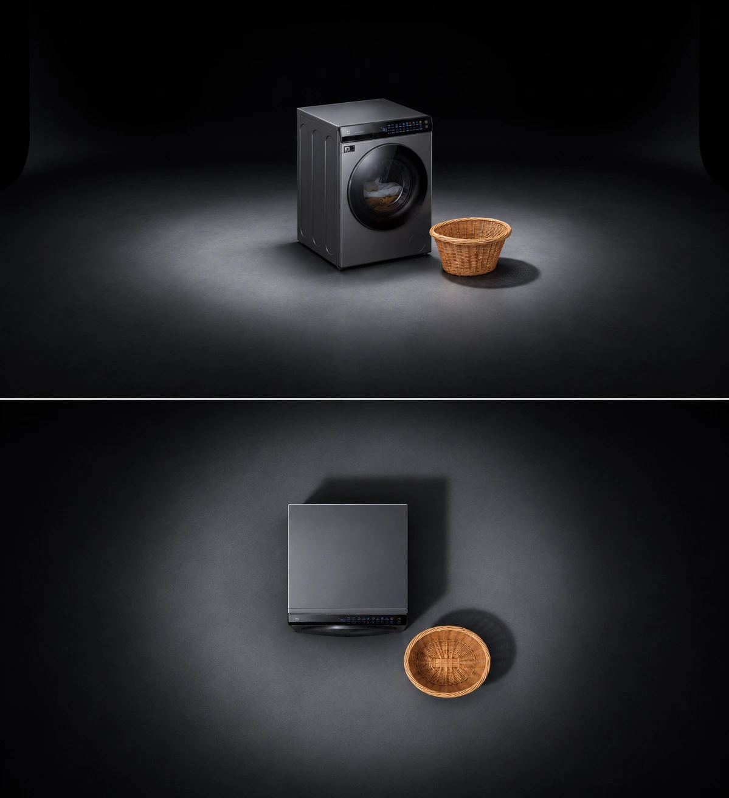
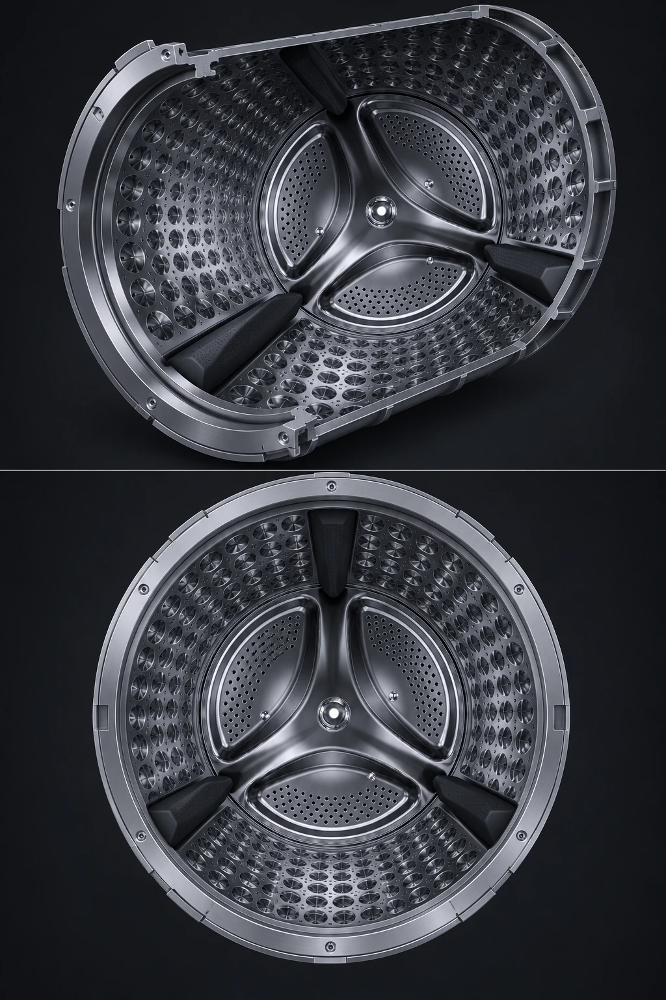
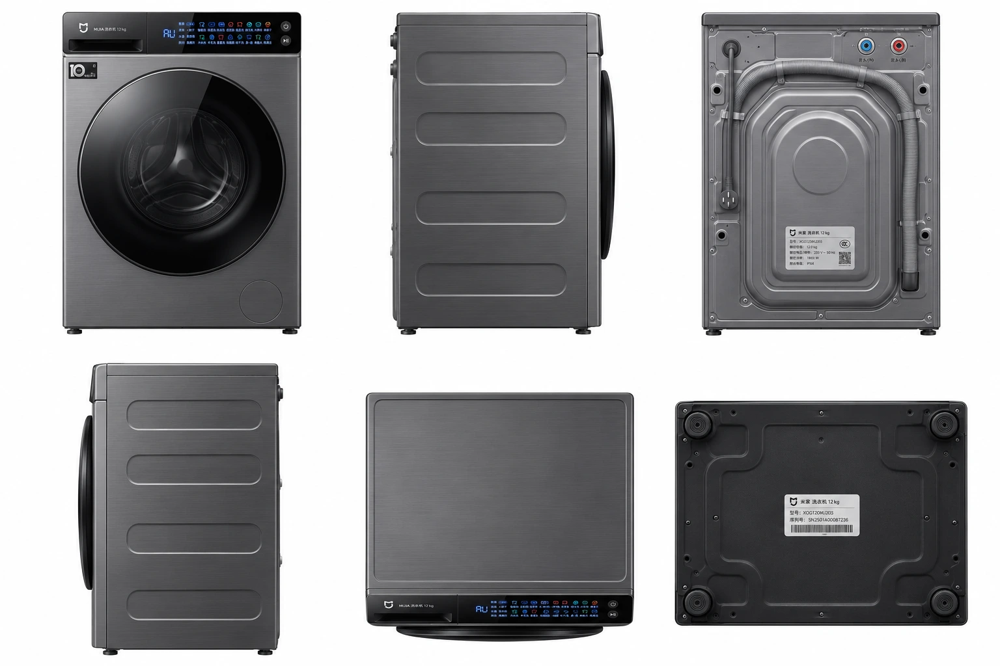
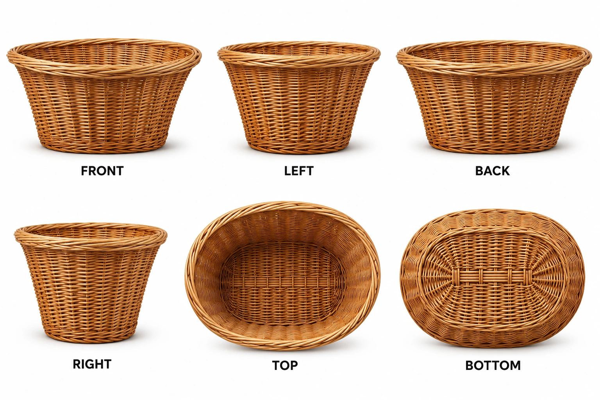
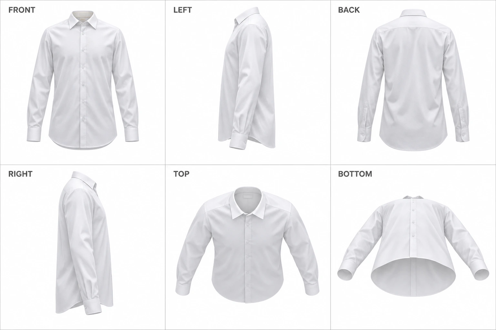
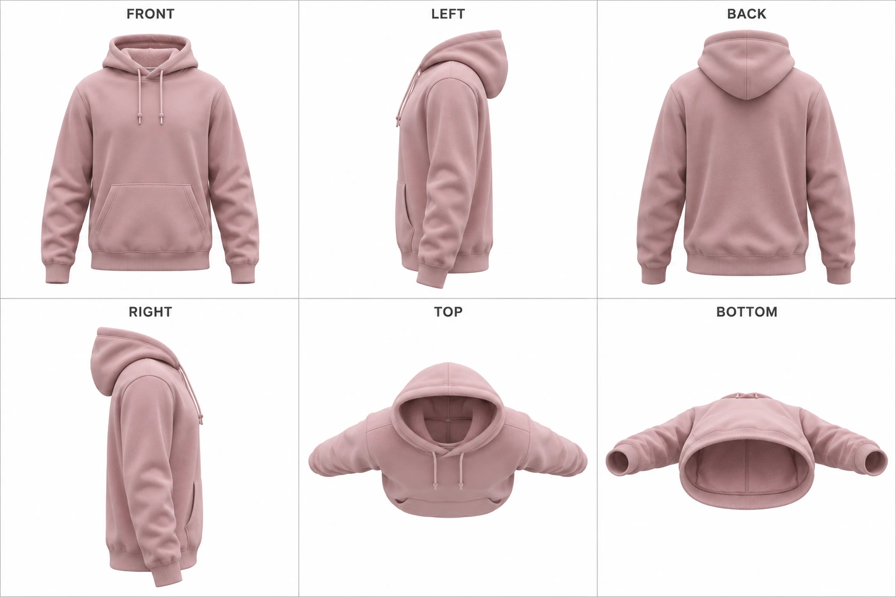
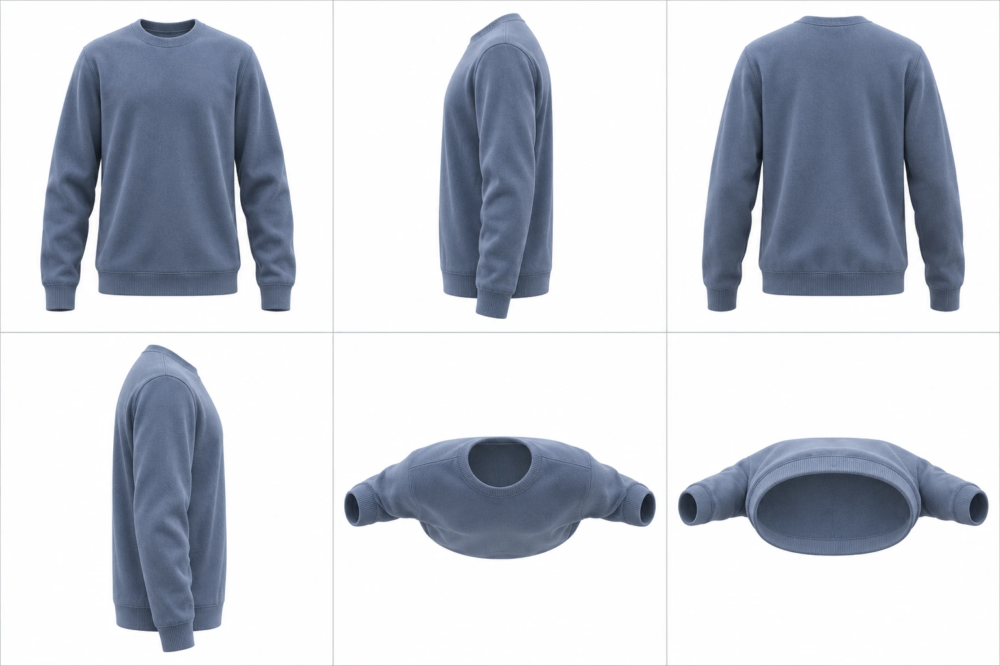
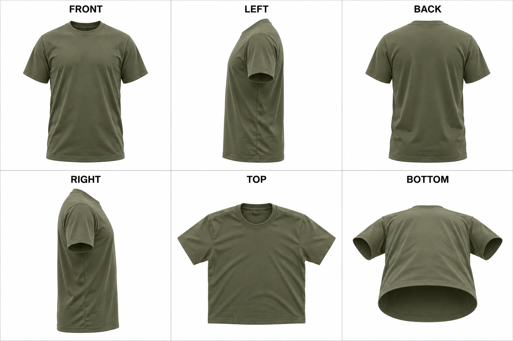

TVC广告
洗衣机
正在连接在线视频…
视频简介
通过机身细节、衣物投放、织物微观与气流剖视镜头展示洗烘流程，结合黑色产品棚和冷暖光效呈现洗衣机的科技质感。
在快手观看原视频 ↗制作资产
场景资产

深色产品棚景
深色产品棚景的场景视觉设定，用于空间布局、光影与镜头背景。

滚筒内部_待修俯瞰
滚筒内部_待修俯瞰的场景视觉设定，用于空间布局、光影与镜头背景。
道具资产

米家滚筒洗衣机
米家滚筒洗衣机的道具视觉设定，用于叙事细节与画面中的产品或物件展示。

藤编衣篮
藤编衣篮的道具视觉设定，用于叙事细节与画面中的产品或物件展示。

白色长袖衬衫
白色长袖衬衫的道具视觉设定，用于叙事细节与画面中的产品或物件展示。
驼色翻领外套
驼色翻领外套的道具视觉设定，用于叙事细节与画面中的产品或物件展示。

粉色连帽衫
粉色连帽衫的道具视觉设定，用于叙事细节与画面中的产品或物件展示。

蓝灰色圆领卫衣
蓝灰色圆领卫衣的道具视觉设定，用于叙事细节与画面中的产品或物件展示。

橄榄绿圆领短袖
橄榄绿圆领短袖的道具视觉设定，用于叙事细节与画面中的产品或物件展示。
剧本与分镜
01_剧本
《洗衣机》广告剧本 依据原片参考帧改编，原声与旁白待听校。产品信息沿用可见字幕。 内景 · 黑色产品棚 光扫过机身标识、圆形舱门与金属孔壁，石墨灰洗烘机显出全貌。操作者端来装着衣物的藤篮，将衣物送入内筒，合上舱门。画面突出 12KG 超大容量，触控面板亮起，展示洗烘程序。 内景 · 滚筒及织物微观空间 水流卷过白衬衫。镜头潜入织物，冷色纤维间的污渍在气泡中逐渐分解。随后以剖视画面表现内筒与减震结构。 内景 · 热交换系统及产品棚 透明机壳上方，蓝色与金色气流穿过换热组件，暖风进入滚筒。水珠从织物表面消退，驼色外套在内筒中舒展。舱门合回产品镜头，整机置于背景中央收尾。
02_脚本
《洗衣机》分镜脚本 时间为采样帧定位段，具体切点和原声待逐镜复核。 | 时间（约） | 画面和表现方式 | 可见字幕重点 | |---|---|---| | 00:00–00:14 | 标识、舱门边缘、内筒壁特写，切整机和滚筒内部 | 产品标识 | | 00:14–00:24 | 手拎藤篮入画，送入衣物，舱门关闭 | 12KG超大容量 | | 00:24–00:28 | 触控面板特写，显示程序和剩余时间 | 内置30种洗烘程序 | | 00:28–00:42 | 水流包裹衬衫，切冷色织物微观，回到多种衣物在筒内展开 | 升级蓝氧净技术、去渍更强力、1.2超高洁净比 | | 00:42–00:48 | 机身剖视展示减震结构，切水面细节 | 6维减震 更平稳 | | 00:48–00:58 | 透明机壳展示冷热气流经过换热组件并进入滚筒 | 高效换热系统 省电又强劲 | | 00:58–01:10 | 暖色气流围绕衣物，微距展示织物与水珠，切驼色外套 | 智能低温柔烘 呵护衣物、自然抖散 清新香薰护理 | | 01:10–片尾 | 舱门近景切整机正面，产品在暗色棚景中定格 | 以画面为主 |